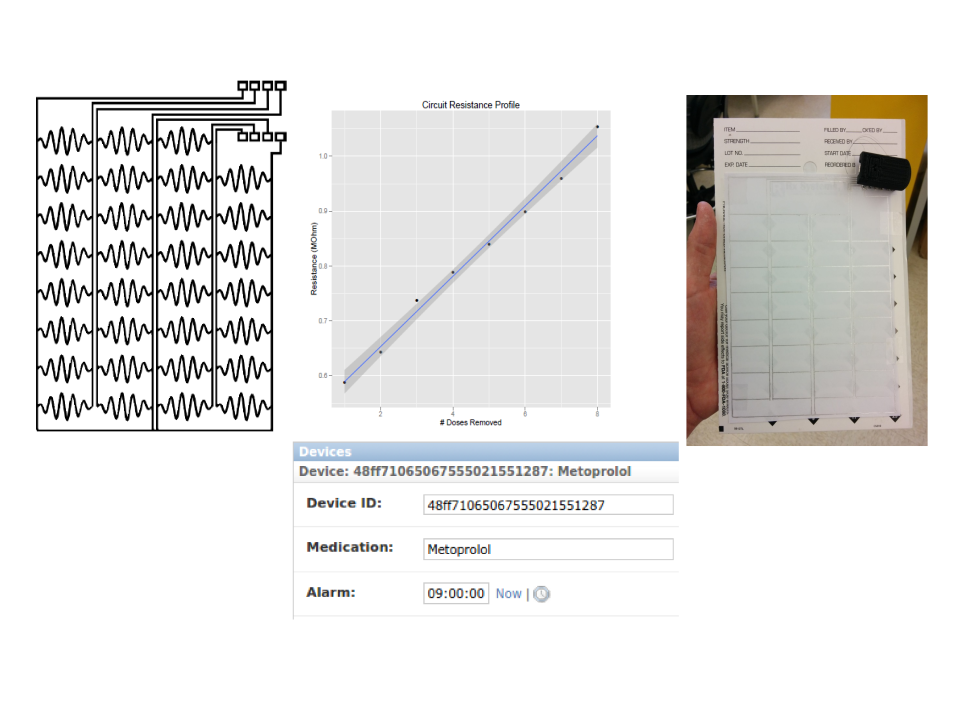

<!doctype html>
<html lang="en">
    <head>
        <meta charset="utf-8">
        <title>Michael L. Bernauer</title>
        <meta name="description" content="A framework for easily creating beautiful presentations using HTML">
        <meta name="author" content="Michael L. Bernauer">
        <meta name="apple-mobile-web-app-capable" content="yes">
        <meta name="apple-mobile-web-app-status-bar-style" content="black-translucent">
        <meta name="viewport" content="width=device-width, initial-scale=1.0, maximum-scale=1.0, user-scalable=no, minimal-ui">
        <link rel="stylesheet" href="../reveal/css/reveal.css">
        <link rel="stylesheet" href="../reveal/css/theme/serif.css" id="theme">
        <!-- Code syntax highlighting -->
        <link rel="stylesheet" href="../reveal/lib/css/zenburn.css">
        <!-- Printing and PDF exports -->
        <script>
            var link = document.createElement( 'link' );
            link.rel = 'stylesheet';
            link.type = 'text/css';
            link.href = window.location.search.match( /print-pdf/gi ) ? '../reveal/css/print/pdf.css' : '../reveal/css/print/paper.css';
            document.getElementsByTagName( 'head' )[0].appendChild( link );
        </script>
        <!--[if lt IE 9]>
        <script src="lib/js/html5shiv.js"></script>
        <![endif]-->
    </head>
    <body>

<div class="reveal">
<!-- Any section element inside of this container is displayed as a slide -->
<div class="slides">

    <section>
        <section data-markdown>
            <script type="text/template">
                # Biomedical Informatics
                <center>*Michael L. Bernauer<br>PharmD Candidate 2016<br>University of New Mexico College of Pharmacy*</center>
            </script>
        </section>

        <section data-markdown>
            <script type="text/template">
                ## American Medical Informatics Association (AMIA)
                "BMI is the interdisciplinary field that studies and pursues the effective
                use of biomedical data, information, and knowledge for scientific inquiry, problem
                solving, and decision making, motivated by efforts to improve human health."
                <cite>(*Kulikowski C., et al. 2012*)</cite>

                Field that is concerned with the optimal use of information, often aided by the use
                of technology and people, to improve individual health, health care, public health, and biomedical
                research.
            </script>
        </section>

        <section data-markdown>
            <script type="text/template">
                ## Biomedical Informatics Sub-specialties
                * **Clinical Informatics**: informatics applied to healthcare (nursing, pharmacy, dentistry, pathology)
                * **Bioinformatics**: informatics in cellular/molecular biology, $1,000 genome era (genomics, cheminformatics)
                * **Imaging Informatics**: informatics as applied to imaging, storage and retrieval (radiology)
                    * Computer vision/Image analysis and segmentation
                * **Consumer Health Informatics**:
                    * Remote Monitoring, Wireless Compliance Monitoring, Activity Trackers/Wireless Accelerometry, Direct-To-Consumer Genetic Testing
                * **Research Informatics**: use of informatics to facilitate biomedical and health research (clinical/translational research)
                * **Public Health Informatics**: includes surveillance, reporting and health promotion
                    * Surveillance:
                    * FDA Adverse Event Reporting System (FAERS)/Vaccine Adverse Event Reporting System (VAERS)
                    * PulseNET
                * **Health IT Management**: management of medical records
            </script>
        </section>
    </section>

    <section>
        <section data-markdown>
            <script type='text/template'>
                ## Interests
            </script>
        </section>
        <section data-markdown>
            <script type="text/template">
                ## Interests
                * **Data mining**: extraction of patterns and knowledge from large amounts of data. Considered to be a critical part of knowledge discovery in databases.
                    * FAERS, PubMed
                * **Machine Learning**: subfield of artificial intelligence (AI) concerned with algorithms that allow computers to learn.
                    * Can be broken in to supervised and unsupervised
                * **Natural Language Processing (NLP)**:
                    * Text summarization
                    * Information extraction
                    * Word embedding: word2vec
                        * Skip-gram
                        * Continuous Bag of Words (CBOW)
                    * Information retrieval
            </script>
        </section>

        <section data-markdown>
            <script type="text/template">
                ## Unsupervised Machine Learning
                Goal is to reveal natural structure or patterns within unlabeled, often high-dimensional data.
                * **Cluster Analysis**: Hierarchical, k-Means
                * **Principle Component Analysis (PCA)**
                * **Singular Value Decomposition (SVD)**
                * **Latent Semantic Analysis**
                * **Latent Dirichlet Allocation**
                * **Word Embedding**: skip-gram, CBOW
            </script>
        </section>

        <section data-markdown>
            <script type="text/template">
                ## Supervised Machine Learning
                Goal is to build prediction model from labeled training data (features + outcome measure) to predict outcome of new unseen examples. Models are evaluated on how well
                they perform on unseen data. (Classification accuracy, sensitivity, specificity, mean squared error)
                * **Regression methods**: prediction of quantitative output
                    * k-Nearest Neighbors
                    * Linear Regression
                    * Logistic Regression
                    * Artificial Neural Networks
                * **Classification methods**: prediction of qualitative/categorical/discrete output
                    * k-Nearest Neighbors
                    * Linear Discriminant Analysis
                    * Logistic Regression
                    * Support Vector Machines (SVM)
                    * Classification and Regression Trees
                    * Naive Bayes Classifier
                    * Artificial Neural Networks
                        * Shallow/Deep architecture
            </script>
        </section>

        <section data-markdown>
            <script type="text/template">
                ## Classic Examples in Machine Learning/Statistical Modeling
                1. Email classification using Naive Bayes classifier (Mehran et al. 1998)
                    * Vector space model used to represent documents
                    * Documents classified according to *maximum a posteriori* decision rule
                2. Multivariate analysis of PSA in men before radical prostatectomy (Stamey et al. 1989)
                    * Predictors include cancer volume, prostate weight, seminal vesicle invasion, capsular penetration, Gleason score
                3. Handwritten digit recognition with back-propagation network (Le Cun et al. 1989)
                    * Handwritten digits are normalized to 16x16 matrix of pixels
                    * Multi-layer network trained with back-propagation used to assign input image to one of the labels 0,1,...,9
                4. Machine learning in DNA microarray analysis for cancer classification (Sung-Bae Cho et al. 2003)
                    * Multi-layer perceptron, k-nearest neighbors, support vector machine and structure adaptive self-organizing
                    maps were used for classification.
            </script>
        </section>

        <section data-background-image="http://yann.lecun.com/exdb/lenet/gifs/asamples.gif" data-background-size='1000px'>
        </section>


    </section>
    <section>
        <section data-markdown>
            <script type="text/template">
                ## Application of Machine Learning Algorithms for Identification of MRSA PFGE Strain Type
            </script>
        </section>

        <section data-markdown>
            <script type="text/template">
                ## Identification of MRSA PFGE Strain Type using Machine Learning
                ### Background
                * PFGE is an electrophoretic molecular typing method used in epidemiologic surveillance of MRSA
                * Electrophoresis of restricted DNA results in characteristic fingerprint
                * Current methods of analysis (Gel Compar II) use hierarchical clustering based on pairwise similarity to classify organisms
                * Current methods require preprocessing and manual intervention (lane detection, preprocessing)

                ### Objective
                * Study the feasibility of using machine learning algorithms as alternatives to hierarchical clustering in determining
                PFGE strain type of methicillin-resistant Staphylococcus *aureus* isolates
            </script>
        </section>
        <section data-markdown>
            <script type="text/template">
                ## Identification of MRSA PFGE Strain Type using Machine Learning
                ### Methods
                * 70 PFGE images were obtained containing ~ 20 fingerprints per image
                * Lanes were extracted using k-means clustering and normalized
                * Training set was created by applying PFGE class labels
                * Final training set contained 843 fingerprints
                * PCA was used as feature selection/dimensionality reduction of the fingerprint array
                * SVM was implemented using 10-fold cross validation
                * Grid search was used to select hyperparameters for kNN, RF and aNN
            </script>
        </section>
        <section data-markdown>
            <script type="text/template">
                ## Identification of MRSA PFGE Strain Type Machine Learning
                ### Results
                * aNN and SVM performed best with overall classification accuracy of 90.0% and 88.5% respectively
                * kNN and RF performed similarly with accuracies of 86.1% and 86.9% respectively

                ### Limitations
                * Big $p$, little $n$: may result in overfitting/high variance
                * Unbalance dataset (preponderance of USA300)

                ### Conclusion
                Supervised learning algorithms such as SVM and aNN provide feasible alternatives to traditional hierarchical clustering methods. It is expected that accuracy
                will improve with more training data.
            </script>
        </section>
    </section>


    <section>
        <section data-markdown>
            <script type="template/text">
                ## Pharmacoepidemiology: Mining the FDA Adverse Event Reporting System
            </script>
        </section>

        <section data-markdown>
            <script type="text/template">
                ## FDA Adverse Event Reporting System (FAERS)
                ### Background
                * FAERS is a public database containing information on adverse event and medication error reports submitted to FDA
                * Designed to support post-marketing safety surveillance of drug and therapeutic biologic products
                * Reporting is voluntary by healthcare professionals and required by manufacturers
                * Evaluation of potential safety concern may result in updates to labeling information, restricted use of med, or product removal from market

                ### Objective
                * Develop as set of open source tools mining adverse drug events using data from the FAERS ([faerslib](https://github.com/mlbernauer/faerslib))
            </script>
        </section>
        <section data-markdown>
            <script type="text/template">
                ## FDA Adverse Event Reporting System (FAERS)
                ### Methods
                * Develop tools for normalizing drugnames ([drugstandards](https://github.com/mlbernauer/drugstandards))
                * drugstandards works by creating a set a mappings from brand name to generic using [DrugBank](http://www.drugbank.ca/) (Wishart DS., et al. 2006) and [ChEMBL](https://www.ebi.ac.uk/chembl/) (Bento AP., et al. 2014)
                * Jaro-Winkler similarity is used to handle misspellings and ranges from 0 to 1
                * Standard data mining algorithms were implemented (Proportional Reporting Ratio, Reporting Odds Ratio, Mult-item Gamma Poisson Shrinker)

                $$PRR = \frac{P(ae|drug)}{P(ae|-drug)}$$
            </script>
        </section>

        <section data-markdown>
            <script type="text/template">
                ## drugstandards API
                <pre><code data-trim data-noescape class='python'>
sudo pip install drugstandards
</code></pre>
                <pre><code data-trim data-noescape class='python'>

import drugstandards as drugs

# brand to generic conversions
drugs.standardize(['lopressor'])
['METOPROLOL']

drugs.standardize(['Benadryl'])
['DIPHENHYDRAMINE']

# standardize misspelled names to generic
drugs.standardized(['Benadril', 'lopresor'])
['DIPHENHYDRAMINE', 'METOPROLOL']

# return match only if Jaro-Winkler similarity > thresh
drugs.standardize(['Benadril'], thresh=0.9)
['DIPHENHYDRAMINE']

# add custom drug mapping
drugs.add_drug_mapping({'MULTI-VITAMIN':'VITAMIN', 'TYLENOL EXTRA STRENGTH':'ACETAMINOPHEN'})
                </code></pre>
            </script>
        </section>

        <section data-markdown>
            <script type="text/template">
                ## faerslib API
                <pre>
                <code data-trim data-noescape class='python'>
import faers

# initialize class and establish connection to database
f = faers.FAERS("faers.db")

# use only records from submitted by Japan in 2012
f = faers.FAERS('faers.db', countries="japan", years=2012)

# use records from both USA and Japan
f = faers.FAERS('faers.db', countries=['japan', 'united states'], years=[2010, 2011, 2012])

# return list of drugs sorted by number of appearances
f.drug_counts()

# return list of events sorted by number of appearances
f.event_counts()

# return list of events containing partial phrase
f.find_events_like("fatigue")

# return list of drugs containing partial phrase
f.find_drugs_like("pril")

# compute PRR and 95% CI for drug-event pair
f.prr("metoprolol", "nausea")

# using brand name
f.prr("glucophage", "nausea")

# reverse search PRR from event name
f.mine_prr_by_event("progressive multifocal leukoencephalopathy")

# return list of events associated with drug sorted by PRR
f.mine_prr_by_drug('natalizumab')
                </code></pre>


            </script>
        </section>
        <section data-markdown>
            <script type="text/template">
                ## FDA Adverse Event Reporting System (FAERS)
                ### Future Directions
                * Explore alternative techniques for discovering drug-adverse event relationships
                    * Cluster analysis/Biclustering (Harpaz R, et al. 2011)
                    * Association rules (Yildirium P. Appl Clin Inform. 2015)
                    * Matrix factorization for discovering closely related AEs

            </script>
        </section>

        <section data-markdown>
            <script type="text/template">
                ## Adverse Events using Non-negative Matrix Factorization
                * NMF is frequently used in text mining applications
                * NMF seeks to decompose matrix $V$ into two matrices $W$ and $H$

                <center></center>

                * Results in *term-feature* and *feature-document* matrix when applied to *document-term* matrix
                * Lets represent FAERS reports as *drug-event* matrix and decompose it with NMF to yield *event-feature* matrix and *feature-drug* matrix
                    1. Find highest ranking features from *drug-feature* matrix
                    2. From sorted list of features find highest ranking events
            </script>
        </section>

        <section data-markdown data-background='faers-mat-img.png' data-background-size='1500px'>
            <script type="text/template">
                ## Drug Event Matrix
                <br><br><br><br><br><br><br><br><br><br><br><br>
            </script>
        </section>

        <section data-markdown>
            <script type="template/text">
                ## NMF Derived Adverse Events Groupings
                * NMF model trained on 711 drugs and 3,630 events using 100 features

                <pre><code data-trim data-noescape class='python'>


#Topic 0: Injection site pain, Pain, Drug ineffective, Arthralgia, Fatigue, Pain in extremity, Headache, Nausea, Malaise, Back pain

#Topic 1: Blood pressure increased, Hypertension, Malaise, Dizziness, Headache, Feeling abnormal, Heart rate increased, Hypotension, Diabetes mellitus, Weight decreased

#Topic 2: Myocardial infarction, Cerebrovascular accident, Cardiac failure congestive, Coronary artery disease, Coronary arterial stent insertion, Cardiac disorder, Death, Coronary artery bypass, Myocardial ischaemia, Acute myocardial infarction

#Topic 3: Fall, Asthenia, Dizziness, Fatigue, Gait disturbance, Nausea, Pneumonia, Pain, Muscle spasms, Weight decreased

#Topic 4: Injection site pain, Pain, Arthralgia, Injection site reaction, Fatigue, Injection site mass, Injection site erythema, Back pain, Pain in extremity, Asthenia

#Topic 5: Death, Hospitalisation, Investigation, Haemoglobin decreased, Anaemia, Cardiac disorder, Cardiac failure, Haemodialysis, Pneumonia, Hypertension

#Topic 6: Injection site pain, Drug ineffective, Psoriasis, Injection site erythema, Incorrect dose administered, Injection site pruritus, Arthralgia, Crohns disease, Injection site bruising, Abdominal pain

#Topic 7: Weight increased, Agitation, Somnolence, Tremor, Anxiety, Insomnia, Tardive dyskinesia, Psychotic disorder, Sedation, Aggression

#Topic 8: Incorrect route of drug administration, Dyspnoea, Product quality issue, Off label use, Drug ineffective, Pneumonia, Cough, Chronic obstructive pulmonary disease, Dry mouth, Dysphonia

#Topic 9: Type 2 diabetes mellitus, Drug hypersensitivity, Myalgia, Neuropathy peripheral, Muscle spasms, Pain in extremity, Pain, Cataract, Arthralgia, Muscular weakness

#Topic 10: Myocardial infarction, Cerebrovascular accident, Cardiac failure congestive, Coronary artery disease, Coronary arterial stent insertion, Coronary artery bypass, Myocardial ischaemia, Cardiac disorder, Vascular graft, Acute myocardial infarction

</code></pre>
            </script>
        </section>

        <section data-markdown>
            <script type='text/template'>
                ## Term-Frequency Inverse Document Frequency
                * Method used in text-mining to weight significant terms.
                * Term frequency offset by total number of documents term appears
                $$tfidf = f\_{t,d} \cdot log \Big(\frac{N}{n\_{t}}\Big)$$

                <pre><code data-trim data-noescape class='python'>
print return_tfidf_features('INSULIN GLARGINE', k=10)
[u'Blood glucose increased',
u'Blood glucose decreased',
u'Injection site pain',
u'Incorrect product storage',
u'Drug administration error',
u'Hypoglycaemia',
u'Blood glucose abnormal',
u'Glycosylated haemoglobin increased',
u'Drug dose omission',
u'Injection site haemorrhage']

print return_tfidf_features('ARIPIPRAZOLE', k=10)
[u'Tardive dyskinesia',
u'Akathisia',
u'Wrong technique in drug usage process',
u'Psychotic disorder',
u'Weight increased',
u'Pathological gambling',
u'Mania',
u'Off label use',
u'Extrapyramidal disorder',
u'Suicidal ideation']

return_tfidf_features('NATALIZUMAB', k=12)
[u'Multiple sclerosis relapse',
 u'Multiple sclerosis',
 u'General symptom',
 u'Memory impairment',
 u'Gait disturbance',
 u'Fatigue',
 u'Mobility decreased',
 u'Poor venous access',
 u'Balance disorder',
 u'Cognitive disorder',
 u'Progressive multifocal leukoencephalopathy',
 u'Central nervous system lesion']

 return_tfidf_features('PRAMIPEXOLE')
 [u'Pathological gambling',
 u'Compulsive shopping',
 u'Hypersexuality',
 u'Impulse-control disorder',
 u'Restless legs syndrome',
 u'Obsessive-compulsive disorder',
 u'Dyskinesia',
 u'Hallucination',
 u'Delirium',
 u'Insomnia']
</code></pre>
            </script>
        </section>
    </section>
    <section>
        <section data-markdown>
            <script type='template/text'>
                ## Meal Planning using Genetic Optimization
            </script>
        </section>

        <section data-markdown>
            <script type="template/text">
                ## Meal Planning using Genetic Optimization
                ### Background
                * Genetic algorithms model natural selection
                * Solutions are represented in vector space each solution is analogous to a chromosome
                * Start by creating random population of solutions
                * Score each candidate against cost function
                * Select elites
                * Mutate and breed (crossover/point mutations)
                * Repeat until some convergence criteria is met

                <center></center>
            </script>
        </section>
        <section data-markdown>
            <script type="template/text">
                ## Meal Planning using Genetic Optimization
                ### Motivation
                * Medical Nutrition Therapy (MNT) is important in preventing diabetes, managing existing diabetes, and slowing rate of complication onset
                * MNT additionally forms integral component of diabetes-self management education (DSME)
                * Newest Vital Sign is a nutrition label accompanied by 6 questions used to assess health literacy
                * It was observed that many diabetic patients score poorly on this assessment and thus a need exists to simplify meal planning
            </script>
        </section>
        <section data-markdown>
            <script type='template/text'>
                ## Newest Vital Sign
                <center></center>
            </script>
        </section>
        <section data-markdown>
            <script type='template/text'>
                ## Meal Planning using Genetic Optimization
                ### Methods
                * 256 DASH compliant recipes were scraped from [www.mayoclinic.org](http://www.mayoclinic.org/healthy-lifestyle/recipes/dash-diet-recipes/rcs-20077146) along with nutrition info and stored in a database
                * Shiny application was developed in R
                * Genetic optimization was implemented using `genalg` package
                * UI was configured with defaults taken from DASH guidelines and allows adjustments for patient specific dietary restrictions
                * Daily and weekly nutrition summaries are computed and displayed
                * Meal plan consisting of links to recipes is available for download
            </script>
        </section>
        <section data-background-iframe="https://mlbernauer.shinyapps.io/meal-planner/"></section>
    </section>

</section>


    <section>
        <section data-markdown>
            <script type="text/template">
                ## Remote Monitoring: Wireless Medication Compliance Monitoring
            </script>
        </section>
        <section data-markdown>
            <script type="text/template">
                ## Wireless Medication Compliance Monitoring
                ### Background
                * **Adherence**: act of filling/refilling prescriptions on time
                * **Compliance**: act of taking medications on schedule or taking medications as prescribed
                * Estimated that 50-55% of children and their families do not follow treatment plans as prescribed (*Bovet P. et al. Bulliten of the World Health Organization. 2002*)
                * Non-compliance may result in MDRO and increase relapse, morbidity, mortality and rehospitalization resulting in increased healthcare costs

                ### Objective
                * Build a device that allows compliance monitoring and enforcement
                    * Spark Core $\mu$Controller
                        * ARM 32-bit Cortex CPU
                        * 12 bit ADC
                        * IEEE 802.11 b/g compliant wifi module (CC3000)
                        * 18 IO
            </script>
        </section>

        <section data-markdown>
            <script type='text/template'>
                ## Wireless Medication Compliance Monitoring
                ### Methods
                * Customizable adhesive circuits were developed using a silver nanoparticle conductive ink
                * Circuit configuration produces change in voltage upon disruption
                * Voltage monitored using 12-bit on-board ADC
                * Firmware developed for $\mu$Controller to allow for time-stamp recording on remote server as well as device notifications (LED)
                * Web service built using python (Django)
                * Allows storage and retrieval of medication events, interaction checking, reminders and notifications (device, SMS, email) to patient and authorized providers
            </script>
        </section>

        <section data-markdown>
            <script type="text/template">
                ## Wireless Medication Monitor
                <center></center>
            </script>
        </section>
    </section>

    <section data-markdown>
        <script type="text/template">
            # Biomedical Informatics
            <center>*Michael L. Bernauer<br>PharmD Candidate 2016<br>University of New Mexico College of Pharmacy*</center>
        </script>
    </section>
</div>
        <script src="../reveal/lib/js/head.min.js"></script>
        <script src="../reveal/js/reveal.js"></script>
        <script>
            // Full list of configuration options available at:
            // https://github.com/hakimel/reveal.js#configuration
            Reveal.initialize({
                controls: true,
                progress: true,
                history: true,
                center: true,
                transition: 'convex', // none/fade/slide/convex/concave/zoom
                // Optional reveal.js plugins
                dependencies: [
                    { src: '../reveal/lib/js/classList.js', condition: function() { return !document.body.classList; } },
                    { src: '../reveal/plugin/markdown/marked.js', condition: function() { return !!document.querySelector( '[data-markdown]' ); } },
                    { src: '../reveal/plugin/markdown/markdown.js', condition: function() { return !!document.querySelector( '[data-markdown]' ); } },
                    //{ src: '../reveal/plugin/highlight/highlight.js', async: true, condition: function() { return !!document.querySelector( 'pre code' ); }, callback: function() { hljs.initHighlightingOnLoad(); } },
                    { src: '../reveal/plugin/highlight/highlight.js', async: true, callback: function() { hljs.initHighlightingOnLoad(); } },
                    { src: '../reveal/plugin/zoom-js/zoom.js', async: true },
                    { src: '../reveal/plugin/notes/notes.js', async: true },
                    { src: '../reveal/plugin/math/math.js', async: true}
                ]
            });
            Reveal.configure({backgroundTransition: 'zoom'});
        </script>
    </body>
</html>
